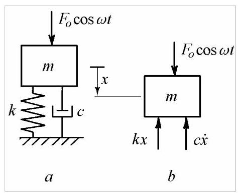
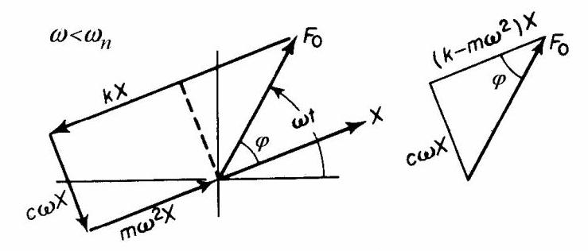
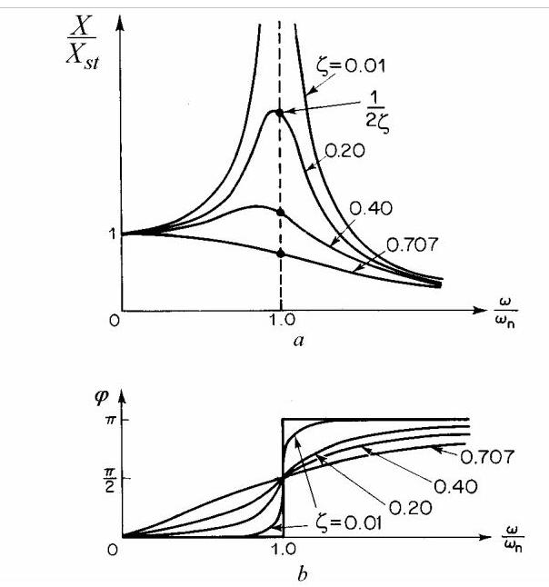
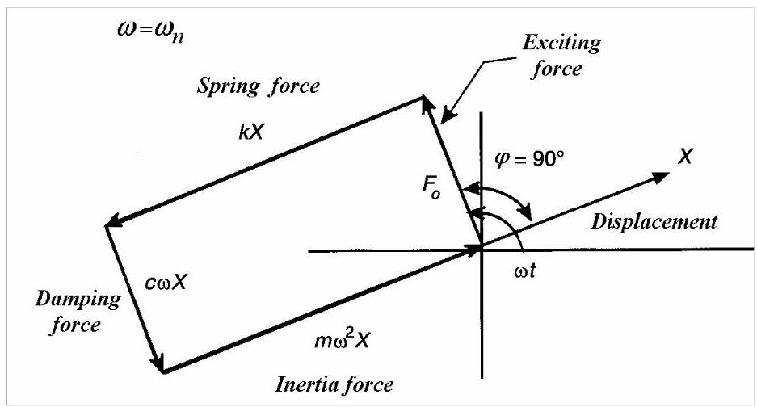
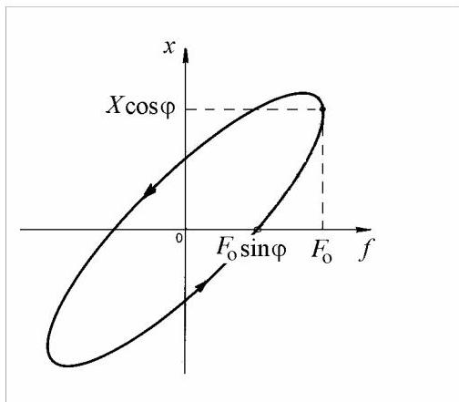
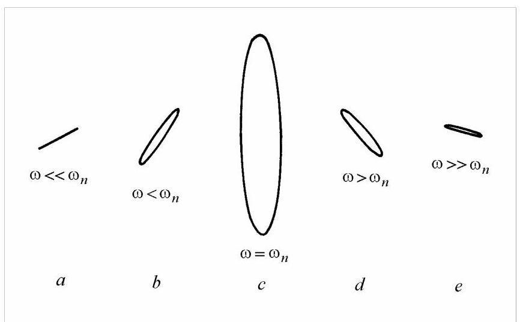

第8篇
最近私信统一回答：
a. 我是做什么方向的? 答：很难界定，大概从本科、硕士、博士、高校工作I、企业工作I、高校工作II（当前），每个阶段持续2-3年，每个阶段都有很明确且方向区别特别大的工程问题去解决。
当前最大兴趣是知识出版（乱点技能树）、编程（接一些工业软件算法开发委托），总而言之算是数字化吧。
b. 写这个赚钱吗？接不接计算委托？ 答： 1.不赚钱，都不够电费。 2.接委托，但是不一定能解决你的问题，而且收费，这个真不能用爱发电。
2.4 阻尼受迫振动
在阻尼受迫振动过程中，由于阻尼耗散能量，响应滞后于激励。在相位共振时，响应幅值有限，且相对于激励存在\({90}^{ \circ }\)的相移。共振时的运动幅值与阻尼有关，共振曲线的宽度与系统阻尼成正比。对于谐波振动，位移-力曲线构成一条闭合的滞回环；对于粘性阻尼，该环为椭圆，其面积即为阻尼耗散能量的量度。
2.4.1 粘性阻尼下的稳态振动
考虑图2.26(a)所示的弹簧-质量-阻尼器接地系统，质量上作用有谐波力\({F}_{0}\cos {\omega t}\)。

图2.26
根据图2.26所示的自由体受力图，\(b\)可写出运动微分方程
方程(2.53)的完整解由齐次方程(2.38)的解(2.46)与对应于右端激励形式的特解之和组成。
由于阻尼作用，齐次解迅速衰减，仅留下特解；该特解为与激励力同频率的谐波运动，并因阻尼而产生相位滞后。
将上述解代入方程(2.53)，可求得位移幅值\(X\)以及位移与力之间的相移\(\varphi\)。
将所有项移至右端，我们得到
上述方程中的各项为力矢量在一条与力矢量成\({\omega t}\)角的(水平)直线上的投影(图2.27)。
力矢量\({F}_{0}\)比位移矢量\(X\)超前\(\varphi\)度。弹簧力\({kX}\)与位移反向，而惯性力\(m{\omega }^{2}X\)与位移同相。阻尼力\({c\omega X}\)比弹簧力超前\({90}^{0}\)。各矢量彼此相对固定，并以角速度\(\omega\)共同旋转。图2.27所示的旋转矢量(相量)图对应于激励频率低于共振频率的情况。

图2.27
将向量在位移方向与法线方向上的投影求和，即可得到平衡方程
驱动力的一个分量平衡阻尼力，另一分量则用于平衡反作用力，即弹性力与惯性力之差。
求解\(X\)和\(\varphi\)可得受迫振动的振幅
以及相位差
其中\({\omega }_{n} = \sqrt{k/m}\)和\(\zeta = c/2\sqrt{km}\)。
图2.28给出了这些表达式在若干阻尼比\(\zeta\)值下的曲线。
振幅-频率图称为共振曲线或频率响应曲线。该曲线自\({X}_{st}\)值起始，在共振频率处增至最大值，随后依次经过阻尼固有频率(2.47)和无阻尼固有频率(2.4)后持续下降，并随频率增加渐近趋于零。

图2.28
力与位移之间的相位角从零频率时的零值，经无阻尼固有频率处的\({90}^{ \circ }\)，随频率增加渐近趋于\({180}^{ \circ }\)。当阻尼很小时，穿越固有频率时的相位差变化率极为陡峭。
对于亚临界阻尼，频率响应图(图2.28, a)呈现共振峰，该峰出现在共振频率处。当\(\zeta > {0.707}\)时，共振峰被完全抹平。过阻尼系统不会出现共振。
需注意的是，“振幅共振（amplitude resonance）”定义为稳态响应峰值\({X}_{\max } = \frac{{X}_{st}}{{2\zeta }\sqrt{1 - {\zeta }^{2}}}\)出现的峰频\({\omega }_{r} = {\omega }_{n}\sqrt{1 - 2{\zeta }^{2}}\)处。
“相位共振(phase resonance)”定义为发生在无阻尼固有频率\(\omega = {\omega }_{n}\)处(此时相位差为\({90}^{ \circ }\))，且位移振幅为\({X}_{\text{res }} = \frac{{X}_{\text{st }}}{2\zeta }\)。当阻尼很小时，两种共振重合。

图2.29
图2.29给出了相位共振时的力矢量图。弹簧力平衡质量的惯性力，激励力仅克服阻尼力。弹簧与质量之间势能与动能持续互换。为维持系统振动所需施加的唯一外力，仅为补充阻尼耗散的能量。
在共振时，反作用能量(弹簧与质量中)为零，而实际耗散的主动能量最大。因此，维持给定位移振幅所需的外力最小。在动态刚度(在驱动点产生单位位移所需的力)随频率变化的图中，共振表现为一个谷值(如图2.14所示)。
2.4.2 位移-力图(Displacement-Force Diagram)
为便于分析，考虑稳态位移(steady-state displacement)
滞后一个角度\(\varphi\)施加于质量的驱动力
上述两个方程即为椭圆的参数方程。在方程(2.58)与(2.59)之间消去时间变量，可得
位移-力响应形成如图2.30所示的逆时针方向遍历的椭圆滞回环(hysteresis loop)。

图2.30
该回线所围面积即为运动一个周期内耗散的能量，其大小等于力(2.59)在位移(2.58)上所做的功。
利用第二个方程(2.55)，上述表达式变为
为了产生功，阻尼力\({f}_{d} = - c\dot{x} = {\omega X}\sin {\omega t}\)必须相对于位移\(x\left( t\right) = X\cos {\omega t}\)有\({90}^{ \circ }\)的相位差。
若用合适的传感器测量位移与力，并将信号输入示波器(纵轴为位移，横轴为力)，所得图像即为利萨茹图形(Lissajous' figure)。低频时图形为一条直线，其斜率取决于两信号幅值之比(图2.31，\(a\))。随着频率升高，直线展开成椭圆(图2.31，b)，椭圆长轴随频率增大。在无阻尼固有频率(undamped natural frequency)处(图2.31，\(c\))，椭圆长轴极大且垂直。频率继续升高，长轴继续旋转但幅度减小(图2.31，\(d\))。椭圆宽度逐渐减小，直至远高于共振频率时，椭圆再次退化为几乎平行于水平轴的直线(图2.31，e)。

图2.31
在相位共振(phase resonance)时，\(\omega = {\omega }_{n},\varphi = {90}^{ \circ },{X}_{\text{res }} = {F}_{0}/{2\zeta k}\)，椭圆长轴垂直，阻尼耗散的能量为
每个周期由粘性阻尼(viscous damping)耗散的能量与激励频率(excitation frequency)成正比(式2.61)。
2.4.3 结构阻尼(Structural Damping)
对飞机结构及多种材料的实验表明，每振动周期耗散的能量与频率无关，而与位移幅值的平方成正比。工程结构的阻尼值即使在较高共振频率下也相对较低。此外，若所有阻尼均为黏性阻尼，则小型高频铃铛受击时将发出沉闷的“砰”声，而非清脆的“叮”声。
这意味着，最初因其数学易处理性而采用的粘性阻尼(viscous damping)应被一种能量耗散与频率无关的模型所取代。这类阻尼称为滞回阻尼(hysteretic damping)或结构阻尼(structural damping)。
“滞回(hysteretic)”阻尼一词的使用有些令人困惑，因为所有阻尼机制都会涉及某种形式的滞后曲线。因此，本文更倾向于使用“结构”一词来描述这一特定机制。它表示一种与速度同相的抵抗力，但与粘性阻尼不同，其大小不与速度成正比，而与位移成正比。阻尼系数与频率成反比，因此阻尼力为\(- h\dot{x}/\omega\)(而非\(- c\dot{x}\))。于是式(2.53)变为
其中\(h\)为结构阻尼系数。在\(\dot{x}\)的系数中包含\(\omega\)意味着只能考虑具有该频率的解。或者，由于已决定需要谐波解，该运动方程也可以用复刚度\({k}^{ * } = k + \mathrm{i}h\)表示
由于\(c\)被\(h/\omega\)取代，每循环的能量耗散为
其与频率无关。
式(2.56)和式(2.57)变为
其中\(g = h/k\)为结构阻尼因子。
Matlab Demo
提供MATLAB分析具有结构阻尼系统的李萨如图。只有在频率比接近1时，才会有比较明显的能量消耗。机制规律没有悟透，欢迎大佬留言指点。 （一般代码都不止是文中提到的功能，建议从网页端下载自己运行一下。代码都是自己读书有感随机取的参数，不具有特定的现实物理意义。）
clear; close all; clc;
%% 系统参数
m = 1; % 质量 (kg)
k = 100; % 刚度 (N/m)
h = 5; % 结构阻尼系数 (N/m)
F0 = 10; % 激励力幅值 (N)
%% 派生参数
wn = sqrt(k/m); % 固有频率 (rad/s)
g = h/k; % 结构阻尼因子 (无量纲)
X_st = F0/k; % 静态位移 (m)
%% 需要分析的频率比
% 我们将分析系统在共振频率以下、共振频率处和共振频率以上的响应。
ratios = [0.05, 0.5, 0.7, 1. , 1.3, 1.5, 2]; % 激励频率 / 固有频率
%% 绘制幅频响应曲线
figure('Name', '幅频响应曲线');
hold on;
grid on;
r_curve = linspace(0, 3, 500); % 用于绘制曲线的更密集的频率比范围
% 根据公式 (2.66) 计算归一化幅值
X_normalized = 1 ./ sqrt((1 - r_curve.^2).^2 + g^2);
plot(r_curve, X_normalized, 'LineWidth', 2, 'DisplayName', '幅频响应曲线');
% 在图上标记出将要分析的李萨如图对应的点
X_points_normalized = 1 ./ sqrt((1 - ratios.^2).^2 + g^2);
plot(ratios, X_points_normalized, 'r*', 'MarkerSize', 10, 'DisplayName', '李萨如图分析点');
xlabel('频率比 \omega/\omega_n');
ylabel('归一化幅值 X / X_{st}');
title('结构阻尼系统的幅频响应曲线');
legend;
hold off;
%% 李萨如图分析
n_ratios = length(ratios);
figure('Name', '李萨如图 (力 vs 位移)', 'Position', [100, 100, 1600, 800]);
%% 循环遍历频率比，计算响应并绘图
for i = 1:n_ratios
r = ratios(i);
omega = r * wn;
% 根据课本中的公式计算稳态幅值和相位角
% X = X_st / sqrt( (1 - r^2)^2 + g^2 )
X = X_st / sqrt((1 - r^2)^2 + g^2);
% tan(phi) = g / (1 - r^2)
% 使用 atan2 来确保相位角位于正确的象限
phi = atan2(g, 1 - r^2);
% 定义一个完整振荡周期的时间向量
T = 2*pi/omega;
t = linspace(0, T, 500);
% 定义激励函数和位移响应
F = F0 * cos(omega*t);
x = X * cos(omega*t - phi);
% 为每个频率比创建子图
subplot(2, 4, i);
plot(x, F, 'LineWidth', 2);
grid on;
axis equal;
xlabel('位移, x (m)');
ylabel('力, F (N)');
title(['频率比 \omega/\omega_n = ', num2str(r)]);
% 在图上显示计算出的幅值和相位，以便清晰地查看
text_content = {['幅值 X = ', num2str(X, '%.3f'), ' m'], ...
['相位 \phi = ', num2str(rad2deg(phi), '%.2f'), '^\circ']};
% 将文本框放置在绘图区域内
ax = gca;
xlim_vals = xlim(ax);
ylim_vals = ylim(ax);
text(xlim_vals(1) + 0.05*diff(xlim_vals), ...
ylim_vals(2) - 0.15*diff(ylim_vals), ...
text_content, 'FontSize', 10, 'BackgroundColor', 'white', 'EdgeColor', 'black');
end
sgtitle('结构阻尼系统的李萨如图', 'FontSize', 14, 'FontWeight', 'bold');